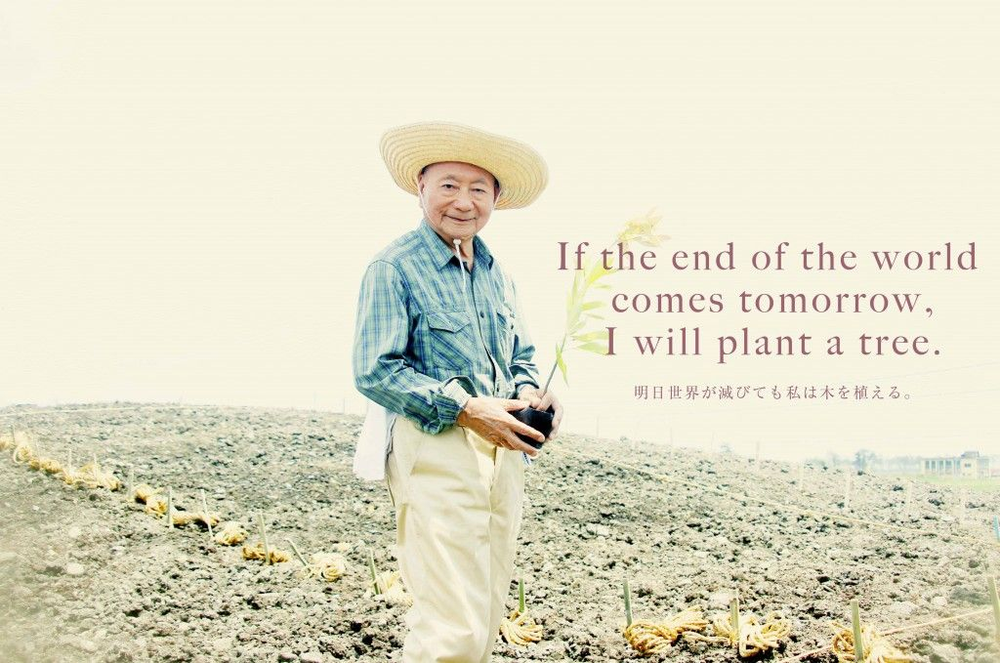

Akira Miyawaki

Akira Miyawaki with the first sapling to be planted to start a new forest.
Here is a timeline of Akira Miyawaki's life:
1928
- Born in Takahashi, Japan
If you have time, you should read more about him on his
Wikipedia entry
.